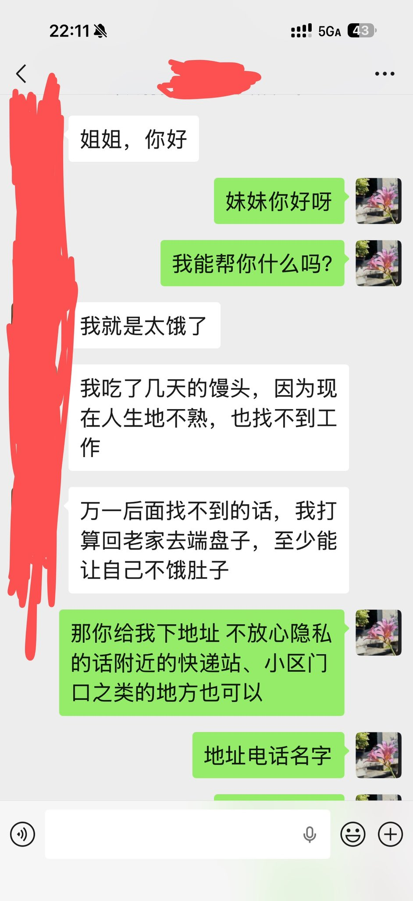
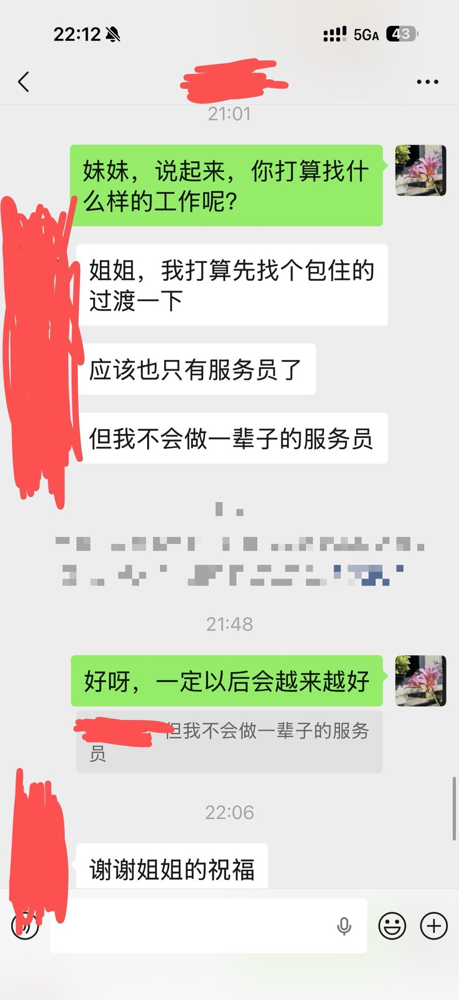

yuer🍥
@yuerQwQ
RT @EleanorAnatidae: 求助帖：
在贵阳，有一个17岁的顺性别女性，由于家庭原因而辍学（初中未毕业），被迫在外工作，但是由于无学历、未成年（虽然已满16）而难以就业。
请问有朋友可以帮助她找工作吗？非常感谢❤️
（刚刚的帖子打码没打全暴露了个人隐私，所以删掉了…


雪雁
@EleanorAnatidae
求助帖：
在贵阳，有一个17岁的顺性别女性，由于家庭原因而辍学（初中未毕业），被迫在外工作，但是由于无学历、未成年（虽然已满16）而难以就业。
请问有朋友可以帮助她找工作吗？非常感谢❤️
（刚刚的帖子打码没打全暴露了个人隐私，所以删掉了） https://t.co/sBsyr7PD2D